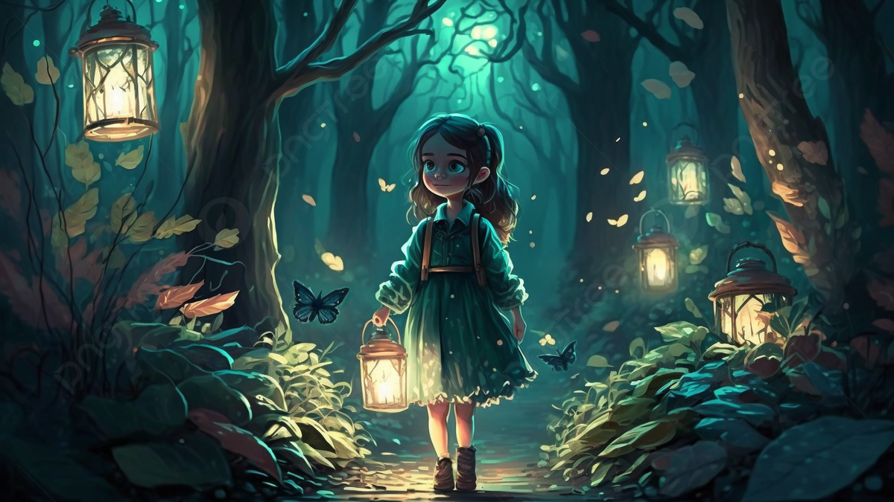

Avanzar de noche
El grupo decide avanzar de noche para evitar ser detectados. La oscuridad es profunda, pero la gema luminosa de Azura brilla débilmente para guiarlos. De repente, escuchan susurros extraños que parecen provenir de la maleza.
El grupo decide avanzar de noche para evitar ser detectados. La oscuridad es profunda, pero la gema luminosa de Azura brilla débilmente para guiarlos. De repente, escuchan susurros extraños que parecen provenir de la maleza.